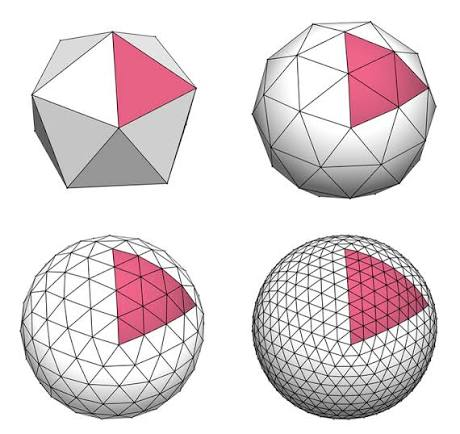
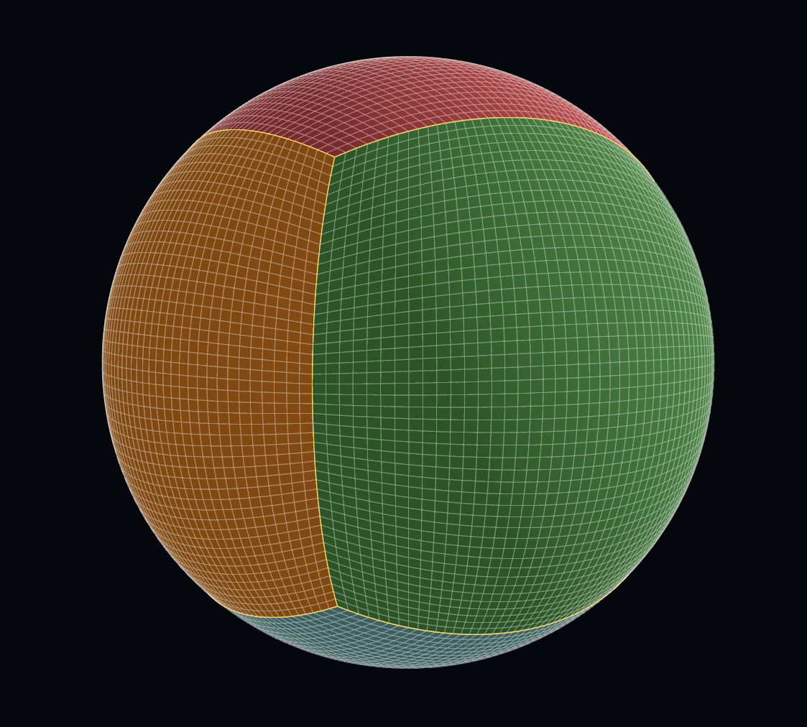

Atmospheric simulation
1. Motivation
Recently I’ve become increasingly interested in earth and atmospheric science. As a freshman physics major, I’m still figuring out what exactly I want to focus on, and earth science and astronomy have become increasingly attractive. To be frank, these are the subjects that first made me want to be a physicist, and lately I seem to be coming back full circle.
I’ve previously made fluid simulations in Unity and JavaScript. On top of that, I’ve been wanting to build up my skills in computational physics and get more into the nitty gritty of differential equations and coordinate transformations. I also just wanted a project to work on in my free time, and all of these things seemed to converge on one idea: a planetary weather model.
Lately I’ve been going down a rabbit hole of astronomy papers on the atmospheric evolution of bodies in the solar system as the sun ages and dies. In the long term, I’d love to build on what I learn here and turn it into my own framework for experimenting with simulations of other well-observed celestial bodies.
2. Constants
These are the constants I'm using. The first three standard Earth values. The last two come from the Galewsky test, one of the published test cases I plan to check my model against. The fluid layer's average depth to 10 km, and that depth fixes how fast gravity waves travel.
| Constant | Symbol | Value |
|---|---|---|
| Planet radius | \(a\) | 6.37122 × 106 m |
| Rotation rate | \(\Omega\) | 7.292 × 10-5 rad/s |
| Gravity | \(g\) | 9.80616 m/s² |
| Mean layer depth (Galewsky test) | \(H\) | 10 km |
| Gravity wave speed | \(\sqrt{gH}\) | ≈ 313 m/s |
3. The grid
To start, I needed a sphere and a way to tile it into cells. My model is Eulerian, so the shape of those cells decides a lot about how the rest of the code works.
There are many ways to do this. Lines of latitude and longitude are the obvious pick, but they squeeze the cells get compressed in longitude. By a quick back-of-the-envelope calculation, a cell's east-west width at \(1^\circ\) spacing is
$$\Delta x = a\cos\varphi\,\Delta\lambda, \qquad a\,\Delta\lambda = 6371\ \text{km}\times\tfrac{\pi}{180} = 111.2\ \text{km}$$ $$ \begin{aligned} \varphi = 0^\circ:&\quad \Delta x = 111.2 \times 1 = 111.2\ \text{km} \\ \varphi = 60^\circ:&\quad \Delta x = 111.2 \times 0.5 = 55.6\ \text{km} \\ \varphi = 80^\circ:&\quad \Delta x = 111.2 \times 0.174 = 19.3\ \text{km} \\ \varphi = 89.5^\circ:&\quad \Delta x = 111.2 \times 0.0087 = 0.97\ \text{km} \end{aligned} $$These tiny polar cells force a very short time step. If the step is too long, information can skip over a cell entirely, which can cause exponential blow-ups and other physically impossible behaviour. More precisely, the time step has to be shorter than the time it takes the fastest wave to cross the smallest cell.
In the literature models I plan to test agianst, the fastest signal is a gravity wave: a bump in the layer's depth that gravity pulls back down, sending ripples outward at \(\sqrt{gH} \approx 313\) m/s. The wind also carries these ripples along at a max speed of 80 m/s, so our maximum speed is ~ 393 m/s. On the 0.97 km polar cells, a safe step works out to about 1.2 seconds, which means simulating a week would take around 500,000 steps. This sounds like too much extra work just to handle a few cells around the poles.
The pole itself would also probably create some divide by 0 complications.
· · ·
The icosahedral grid starts from an icosahedron, splits each of its 20 triangular faces into smaller triangles, and pushes the points out onto the sphere. Its cells come out very even in size, and you can use the triangles directly or group them into hexagons, with 12 pentagons left over at the icosahedron's corners. The cubed sphere starts from a cube instead. Each of its six faces gets an ordinary square grid, and the grid is projected onto the sphere.

A cube can also be turned into a sphere by normalizing the vector to each point onto a unit sphere

With the cubed sphere, I could store each field as a plain 2D array per panel, which makes indexing simple and should port cleanly to the GPU later. It also makes stencils (the neighbouring cells used to approximate a derivative at a point) straightfoward to define.
Projecting each grid point onto the sphere this way is called the gnomonic projection. The cube's six faces become six patches, which I'll call panels, and together they cover the sphere with no singularities. Panels 0 to 3 go around the equator, panel 4 is the north cap and panel 5 is the south.
Each panel gets its own coordinates \((\alpha,\beta)\), both running from \(-\pi/4\) to \(\pi/4\). Setting \(X = \tan\alpha\) and \(Y = \tan\beta\) gives a point on the cube face, and dividing by its length puts it on the sphere:
$$\mathbf P(\alpha,\beta) = \frac{\mathbf c(X,Y)}{\lVert \mathbf c(X,Y)\rVert}, \qquad \mathbf c = (1, X, Y)\ \text{on panel 0}. \tag{1}$$ $$\mathbf P(\alpha,\beta) = \frac{\mathbf c(X,Y)}{\lVert \mathbf c(X,Y)\rVert}, \qquad \mathbf c = (1, X, Y)\ \text{on panel 0}. \tag{1}$$export function cubePoint(face: number, x: number, y: number): Vec3 {
switch (face) {
case 0: return [1, x, y];
case 1: return [-x, 1, y];
case 2: return [-1, -x, y];
case 3: return [x, -1, y];
case 4: return [-y, x, 1];
case 5: return [y, x, -1];
default: throw new Error(`unknown face ${face}`);
}
}grid/cubedSphere.ts. +X points at (0°, 0°), +Y at (0°, 90°E), +Z at the North Pole.
To get this right, the polar panels have to be rotated so that their edges meet the equatorial panels point for point.
The grid points are spaced evenly in angle, using \(X = \tan\alpha\), not evenly across the cube face. With even spacing on the face, cells near the edges span only about half the angle of those at the centre (0.51x at C48). Spacing them by angle keeps the biggest and smallest cells within a factor of about 1.4 of each other.
A grid with \(N\) cells along each panel edge is called C\(N\). It has \(6N^2\) cells and spacing \(\Delta = \pi/(2N)\) radians. My main grid is C96: 55,296 cells, about the same as the 64,800 of a \(1^\circ\) lat-lon grid. Its cells range from 74.3 km to 104.2 km wide, and with the test cases I plan to run has a timestep of at 95 seconds.
4. The Simulating Equations
I'm treating the atmosphere as a single thin layer of fluid wrapped around a spinning Earth. Each cell stores the height of the fluid at its centre, and differences in height between cells create pressure gradients, pushing fluid from high areas toward low ones. My equations are:
$$\frac{\partial \mathbf u}{\partial t} + (\mathbf u\cdot\nabla)\mathbf u + f\,\hat{\mathbf k}\times\mathbf u + g\nabla h = 0, \qquad \frac{\partial h}{\partial t} + \nabla\cdot(h\mathbf u) = 0.$$Here \(\mathbf u\) is the horizontal wind, \(\hat{\mathbf k}\) is the outward unit normal, \(g\) is gravity, and \(f = 2\Omega\sin\varphi\) is the Coriolis parameter at latitude \(\varphi\). The first equation is effectively Newton's second law for a column of fluid, while the second enforces conservation of mass.
3. Computing Distance
The solver does its calculus in \((\alpha,\beta)\), but the physics happens in meters.
Further documentation in progress.